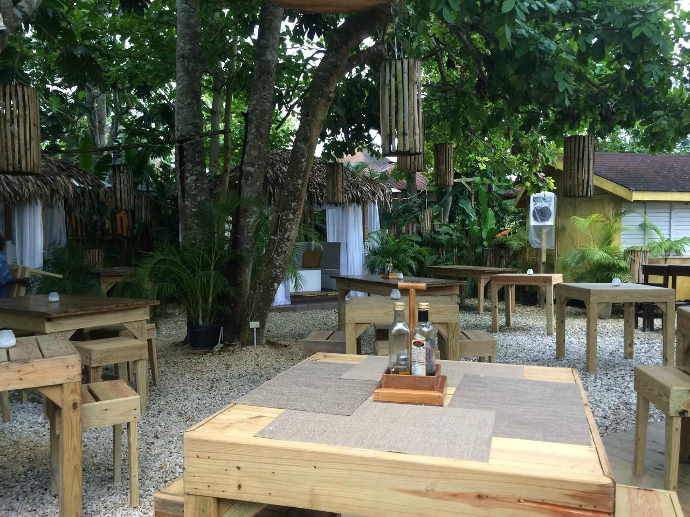

Gallery
Kenny's in pictures.
The food, the bar, the garden and Friday nights. Tap any photo to see it bigger.
53 photos and videos

Gallery
The food, the bar, the garden and Friday nights. Tap any photo to see it bigger.
53 photos and videos